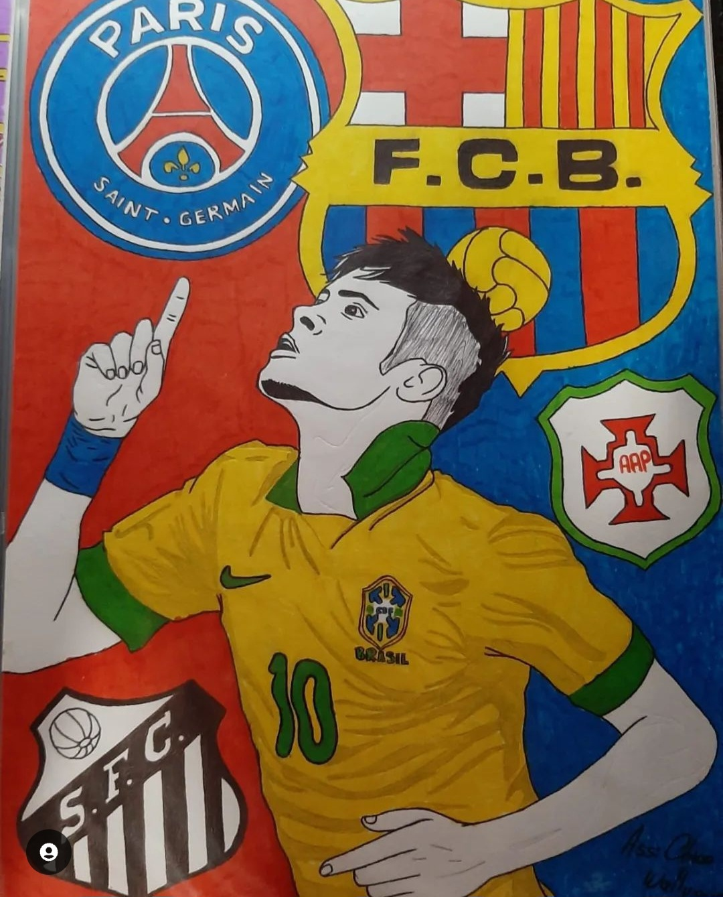
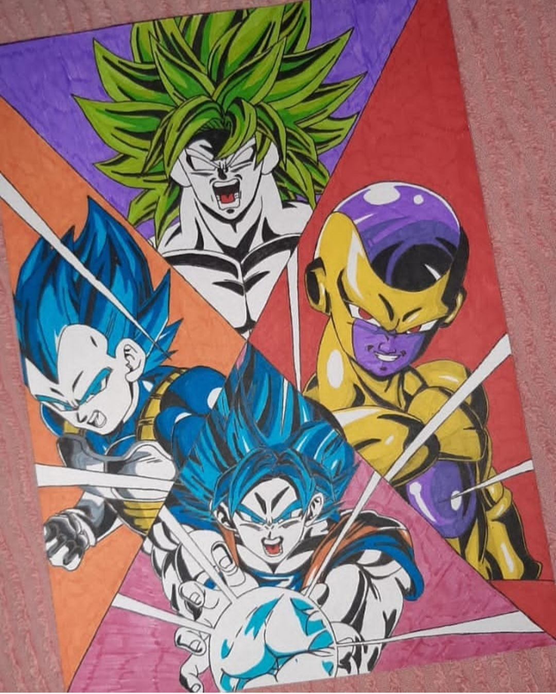
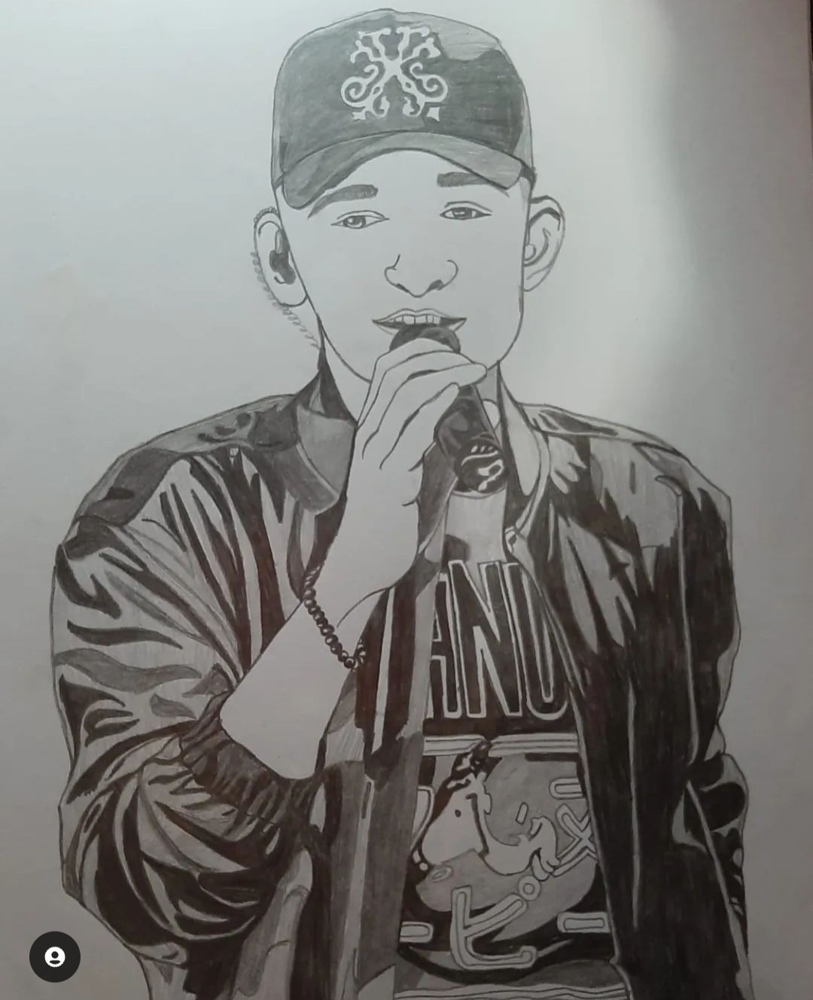
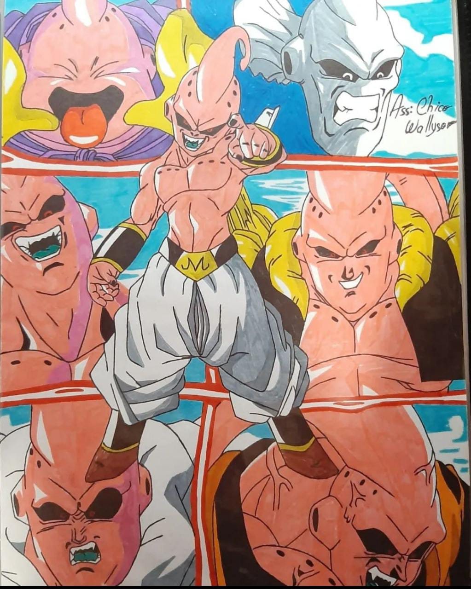
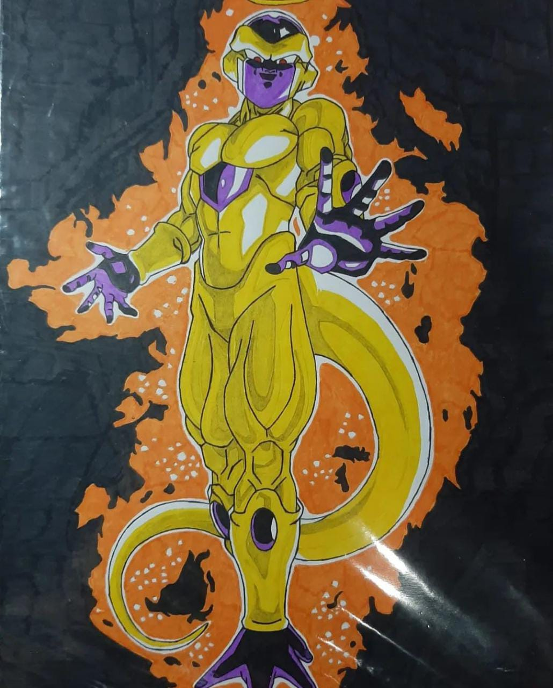
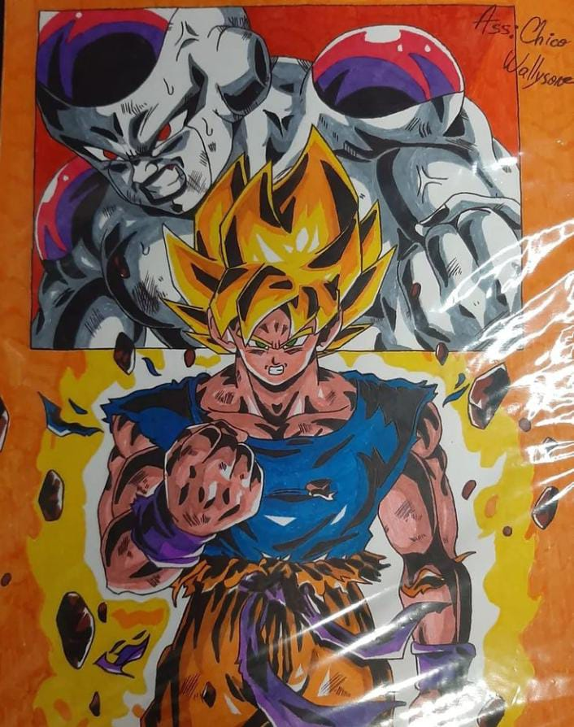

Uma parte dos meus trabalhos, que são os motivos para eu poder melhorar cada vez mais e mais, cada desenho tem um sentimento que você passa, cada um foi um momento gravado desde o momento que decide qual você vai desenhar, é um sentimento de escolha que onde a dedicação é posta e você se esforça para passar o melhor pra quem vai ver, e esses sentimentos passam pelo esboço, pelo lápis, até a parte de colorir aos últimos detalhes e você ver o resultado daquele desenho que só estava na sua mente e depois de algumas horas ou até dias ele esta pronto e mostra que são sinais de evolução que todo aquele trabalho e a esperança depositada não foi em vão e muitas vezes isso não é nem sobre um esboço que com seu esforço você chega lá finalmente depois de muito trabalho e no final você vê que toda a sua caminhada não foi em vão.
Desenho todo especial para os amantes do futebol, e nada mais digno de representar o futebol com um ícone para muitas pessoas com todo o seu talento, Neymar da Silva Santos Júnior (Mogi das Cruzes, 5 de fevereiro de 1992), mais conhecido como Neymar é um futebolista Brasileiro, considerado um dos maiores da história. Ganhou diversos títulos jogando pelo Santos Futebol Clube, onde iniciou sua carreira aos 11 anos de idade. Sua posição é atacante, atuando como ponta-esquerda onde passou por muitos times e até a nossa seleção Brasileira.
Quem não gosta de um anime? E ainda o ícone dos animes que é Dragon Ball, o anime que marcou décadas e ainda marca muito dos seus fãs. Com Goku, Freeza, Broly e Vegeta que marcaram lutas inesquecíveis na temporada de Dragon Ball Super.

Como não babar nesse desenho? Uma das cantoras pop mais respeitadas e idolatrdas do momento pelo povo teen e até pelas pessoas mais velhas, e nada mais justo do desenho ser a representação de um do seus clipes mais conhecidos como "When The Party's Over" onde todos ficam chocados com a sua representação perfeita de como era o tempo onde ela tinha surtos, pânicos, psicológicos... E como ela perfeitamente agrega seus sentimentos nesse álbum de uma maneira bem "macabra".
Quem não curte um bom forró? E nada como uma representação do rei do forró do momento, João Fernando Gomes Valério, mais conhecido pelo seu nome artístico como João Gomes que por onde passa arrasta multidões, leonino, João Gomes nasceu em 31 de julho de 2002, na cidade de Serrita, no interior de Pernambuco, porém nasceu em petrolina, uma das principais cidades do estado, onde desde os sete anos ja participava do coral da igreja. Ele estudou técnico em agropecuária no Instituto Federal de Pernambuco (IF Sertão-PE) e foi lá que começou a conquistar os seus primeiros fãs.
Mais um do anime Dragon Ball mas agora com um grande vilão e inesquecível da saga Majin Boo, o vilão que teve sua primeira aparição em Dragon Ball Z na saga de babidi. Com todas as suas versões e cada uma mais poderosa que a outra: Majin Boo gordo, Evil Boo, Kid Boo< Super Boo, Super Boo Gotenks e Super Boo Gohan.
Já que representamos um vilão de Dragon Ball, por que não representar esse vilão ícone? Que se tornou viral até em vídeos pela internet com a frase que ficou na nossa cabeça por muito tempo "Freezaaaaaar, proque você matou o curirin?", o vilão que é se tornou um grande impecilio na vida dos hérois por volta de muitas vezes a cada vez mais poderoso, como nessa versão em Dragon Ball Super.
Melhor representação de uma luta perfeita de Dragon Ball? Essa luta entre Goku e Freeza em Dragon Ball que marcou o anime que durou somente 19 episódios, essa luta onde freeza mostra todas as suas versões com vontade de derrotar Goku, mas Goku não fica para trás com a transformação Super Saiyajin e os dois dão o seu máximo nessa batalha.